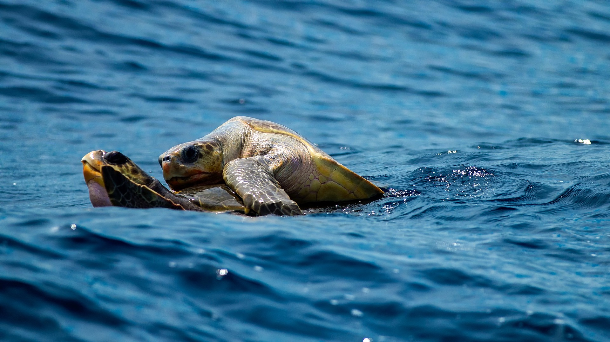
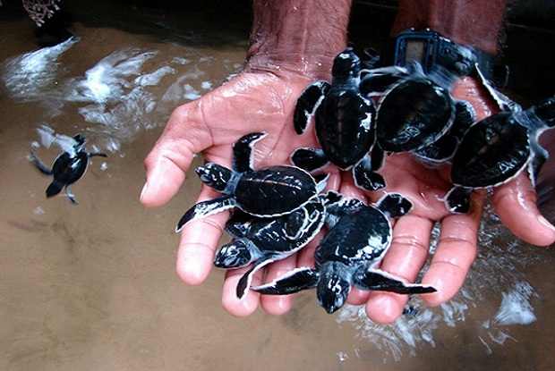
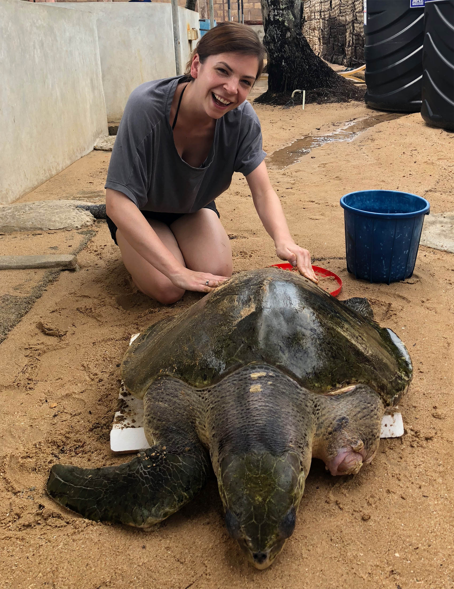

The Importance of the Sri Lankan Turtle Population

The turtle population in Sri Lanka is an essential component of the island nation's unique biodiversity and is crucial to the health of the marine ecology. Since turtles are a keystone species, their influence on the environment is greater than their relative abundance. For instance, by feeding on algae that might harm coral reefs, turtles contribute to their continued health. Additionally, they serve as food for predators like sharks and seabirds, which supports a balanced marine food chain. Additionally, turtles aid in the movement of nutrients within the water, which benefits the ecology as a whole.
However, a number of human activities, such as coastal expansion, fishing, and pollution, pose a danger to the Sri Lankan turtle species. Additionally, turtles are targeted for their flesh, eggs, and shells since these items are prized in various civilizations. Due to this, Sri Lanka's turtle population has been declining over time, making conservation efforts more important than ever.
Turtle hatcheries in Sri Lanka

Although turtle hatcheries work in different ways, the fundamental idea remains the same. Turtle eggs are gathered by the hatcheries from beaches where they are vulnerable to predators or other disturbances. After that, the eggs are put in secure locations inside the hatchery, where they are watched over and cared for until they hatch. When the turtle eggs hatch, they are returned to the water for swimming. The protection of turtles in Sri Lanka benefits from turtle hatcheries in a number of ways. The ability to avoid predators is one of the key benefits. On the beaches, there is a significant danger of predation from dogs, birds, and people for eggs and hatchlings. The odds of the hatchlings surviving are considerably increased by gathering the eggs and incubating them in the hatcheries. Additionally, hatcheries offer a secure setting for the development of hatchlings. With access to clean water and a secure area to relax, hatcheries offer the perfect home for young animals. The possibility of the hatchlings surviving in the wild is increased by giving them a head start in life. The fact that turtle hatcheries promote turtle conservation is another advantage. Visitors may watch the hatchlings up close by taking guided tours of the hatcheries. The chance to learn about the life cycle of turtles, their significance to the marine ecology, and Sri Lanka's conservation efforts is provided through this event.
Organizations operating turtle hatcheries in Sri Lanka

Sri Lanka is home to several organizations that run turtle hatcheries, such as the Kosgoda Turtle Hatchery and the Rekawa Turtle Conservation Project. These hatcheries are frequently accessible to visitors since they are situated close to well-known tourist attractions. Visitors may watch the hatchlings up close by taking guided tours of the hatcheries. In order to promote turtle conservation, these groups also carry out research on turtle populations and offer educational activities. Individuals may assist these groups and the conservation efforts that are being made to safeguard Sri Lanka's turtle populations.
Turtle hatcheries are crucial for safeguarding Sri Lanka's turtle stock. They enhance the number of turtles in Sri Lanka by providing a secure habitat for turtle eggs to hatch. Hatcheries help promote the value of turtle conservation and provide residents a chance to become involved in turtle conservation initiatives. Despite the fact that hatcheries are a crucial tool for turtle conservation, they cannot resolve all the issues that